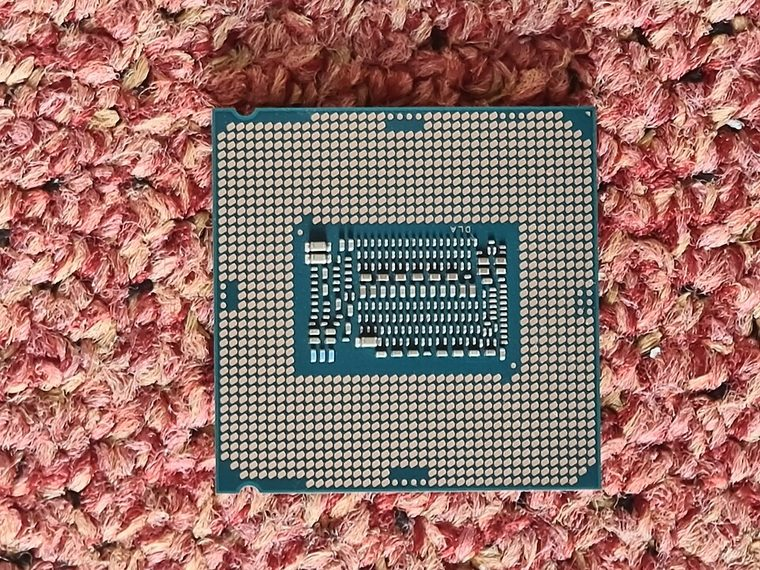

[ ENTHUSIAST DESKTOP PROCESSORS // IDENTIFIED PROCESSOR ]
Intel Core i9-9900K
The 8-core Coffee Lake Refresh Core i9-9900K is a high-end LGA1151 desktop processor with unlocked multiplier and integrated UHD Graphics 630.

MODEL IDENTIFICATION: Intel Core i9-9900K. Compare the printed part number, speed grade, package, cache configuration, and stepping with the cited documentation; do not transfer one variant’s limits to another.
Recorded specifications
| Cataloged part | Intel Core i9-9900K |
|---|---|
| Era / family | 9th Generation Intel Core / Coffee Lake Refresh, 2018; Core i9-9900K. |
| Key specifications | 8 cores / 16 threads; 3.60 GHz base, up to 5.00 GHz Turbo; 16 MB Intel Smart Cache; 95 W TDP; LGA1151; dual-channel DDR4-2666; UHD Graphics 630. |
| Interface / fit | Requires a 300-series chipset board and supporting BIOS; LGA1151 100/200-series boards are not compatible even though the socket name/pin count appears similar. Confirm power delivery and cooler support. |
| Variant distinction | 9900K differs from 9900KF, which lacks integrated graphics, and 9900KS special edition. Intel’s PL2/Turbo behavior may exceed the 95 W base TDP depending on board power settings. |
Compatibility and variants
- Requires a 300-series chipset board and supporting BIOS; LGA1151 100/200-series boards are not compatible even though the socket name/pin count appears similar. Confirm power delivery and cooler support.
- 9900K differs from 9900KF, which lacks integrated graphics, and 9900KS special edition. Intel’s PL2/Turbo behavior may exceed the 95 W base TDP depending on board power settings.
- Confirm the system manufacturer’s exact processor support list, firmware minimum, board revision, power/thermal envelope, and memory requirements before installation.
Service and archival notes
Record CPU sSpec, BIOS microcode, motherboard power limits, cooling and memory configuration. Verify 300-series support list and inspect socket contacts.
Preserve provenance and a record of the exact marking, condition, tested board/platform, firmware, cooling, memory configuration, and test conditions. Separate published specification limits from observations made on a particular surviving system.
Sources & further reading
- Intel ARK — Core i9-9900K exact product specificationsSpecific model or manufacturer-family reference; verify revision and configuration against the device marking and platform documentation.
- Intel 8th/9th Generation Core Desktop Processor Datasheet — Coffee Lake platformSpecific model or manufacturer-family reference; verify revision and configuration against the device marking and platform documentation.
- Intel 9th Generation Core launch and product historySpecific model or manufacturer-family reference; verify revision and configuration against the device marking and platform documentation.
Third-party reference pages and document archives are finding aids. The matching manufacturer datasheet, product specification, and board support documentation take precedence for the exact revision and host.